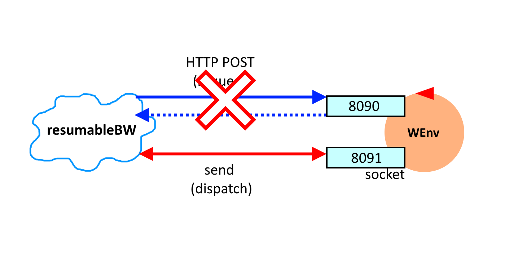

Introduction
This case-study starts to deal with the design and development of proactive/reactive software
systems which work under user-control.
Requirements
Design and build a software system (named from now on 'the application') that leads the robot described in
VirtualRobot2021.html
to walk along the boundary of a empty, rectangular room under user control.
More specifically, theuser story can be summarized as follows:
More specifically, the
| the robot is initially located at the |
|
| the application presents to the user a |
|
| when the user hits the button |
|
| when the user hits the button |
|
| when the robot reachs its |
Delivery
The customercognome_nome_resumablebw.pdf
Requirement analysis
The interview with the client has outlined the following meanings for the
initial requirements:
robot - a device that can at least move forward and rotate. It must be able to receive command through the networkroom - a normal, conventional room, the same that any building has. The room is rectangular and has no obstacles inside of itboundary - the room perimeter that represent the path along which the robot must move. It is delimited by solid walls and has the shape of a rectangle (4 straight sides and 4 right angles).HOME - it's the position from where the robot starts moving and to where it must return. The robot must be turned toward the same direction as it started.journey - the sequence of moves the robot has done until a particular execution time.move history - the sequence of moves the robot has done before ending the execution.
walk - the action that the robot must perform: it must move the closest possible to the walls (i.e. the boundary) of the room.
User story
The user story has been already defined by the client.Informal first set of functional test plans
The TestPlan must verify the base movement the robot needs to perform to execute the
boundary walk command, in particular moveForward and turnLeft.
Then the TestPlan must check that the robot correctly detect when it collides with an obstacle.
Finally it's necessary to check that the move history the application generates is the one that
we would expect, by knowing the boundary path.
Problem analysis
Relevant aspects
As stated in VirtualRobot2021,
the robot can communicate with the system in two different ways:
Given that the application will receive asynchronous messages, the best solution is to use the websocket support, otherwise we would need to implement a polling algorithm, which generates overhead.
The application performs two fundamental activities: the first is proactive, as we send the command that makes the robot start doing the boundary walk; the second one is reactive, as the application must react and handle the stop and resume commands from the GUI.
As there will be a GUI, the application could be implemented using theMVC pattern for the
project architecture: the view is the GUI with the buttons; the controller represent the dynamic
part of the application, which handles the input from the GUI and calls the methods of the
business logic; the model is represented by data (e.g. the move history) and informations.
The button handler could be implemented using the Observer Pattern ,
detecting when the user press a button and then calling a callback for the resume or stop
commands.
HTTP POST - the application sends a POST request message on the port 8090 and receive a response from the robot.websocket - the application sends asynchronous message through the socket associated with the port 8091, and the robot responds sending back informations.
Given that the application will receive asynchronous messages, the best solution is to use the websocket support, otherwise we would need to implement a polling algorithm, which generates overhead.
The application performs two fundamental activities: the first is proactive, as we send the command that makes the robot start doing the boundary walk; the second one is reactive, as the application must react and handle the stop and resume commands from the GUI.
As there will be a GUI, the application could be implemented using the
Main problems
Handle Stop/Resume - This is the fundamental part of the application. We must make the application call a function to start sending the commands of the boundary walk, by pressing the resume button. The button stop, if pressed interrupts the execution of the boundary walk, waiting the current move to end. If the button resume is pressed, the executions resume from the following move command of the boundary routine.
Logical architecture
Legend: |
|
The system we must design has two software macro-components:
|
 |
The following resources are provided by the software house and could be usefully exploited to reduce the development time of a first prototype of the application:
- The Consolegui.java (in project it.unibo.virtualrobotclient)
- The RobotMovesInfo.java (in project it.unibo.virtualrobotclient)
- The RobotInputController.java (in project it.unibo.virtualrobotclient)
Test plans
The test plan must verify that the robot can perform the fundamental boundaryWalk actions/commands,
that are the following:
- moving forward (w) for a certain amount of time (small step);
- detecting collision;
- turning left (l)
private robotController;
@Before
public void init()
{
this.robotController.create();
this.robotController.setHome(); // it already is in the home position
}
@Test
public void checkBoundaryFundamentals()
{
do
{
collision = this.robotController.sendCmd(moveForward);
}
while( !collision );
this.robotController.sendCmd(rotateLeft);
assertTrue(!collisione);
}
Then the robotController must verify that the move history or the generated map correspond to the one we
expect.
JUnit pseudocode:
private robotController;
private expectedMoveHistory;
@Before
public void init()
{
this.robotController.create();
this.robotController.setHome(); // it already is in the home position
this.expectedMoveHistory = "wwwl";
}
@Test
public void checkMoveHistory()
{
this.robotController.sendCmd(moveForward);
this.robotController.sendCmd(moveForward);
this.robotController.sendCmd(moveForward);
this.robotController.sendCmd(rotateLeft);
assertTrue(compare(this.expectedMoveHistory, this.robotController.getMoveHistory()));
}
Project
Testing
Deployment
The deployment consists in the commit of the application on a project named iss2021_resumablebw of the MY GIT repository ( RRR ).
The final commit commit has done afterXXX hours of work.
The final commit commit has done after